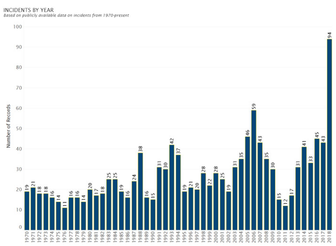

GUN VIOLENCE IN AMERICA
LET'S PUT A END TO THIS

Every day, Americans are killed with guns and hundreds more are shot and injured.
The United States has been suffering from gun violence crisis for many years and still is today.
If knowing the facts can be a first step in preventing tens of thousands of
homicides, assaults, and other crimes commited with firearms each year then, LET'S GET TO IT!
SCHOOL SHOOTINGS IN AMERICA

The youth of today are suppose to be the future leaders of this country.
Not the future targets or victims of the next
school shooting or mass shooting.
Schools experience either a shooting or lock down every 12 days. As you can see on
the graph above, you can see where they mainly take place.
Source: https://womensvoicesforchange.org/school-shootings-a-nation-in-crisis.htm
MASS SHOOTINGS OVER THE YEARS 1982 - PRESENT DAY
As you can see there is a dramatic increase in 2018.
As the people of this country, we shouldn't be trying to decrease the population of this country.

This link will show you all the tragic incidents that have accorded in the United Stated.
Source: https://www.motherjones.com/politics/2012/12/mass-shootings-mother-jones-full-data/
This link states how there has be more mass shootings than days this year.
Source: https://www.cbsnews.com/news/mass-shootings-2019-more-mass-shootings-than-days-so-far-this-year/
ONLY ONE MAN
 There has been over 115 mass shootings over the passed 37 years. And those are only the ones that had been documented.
There has been over 115 mass shootings over the passed 37 years. And those are only the ones that had been documented.The Las Vegas shooting, that occured on October 1, 2017, was the highest number of injured civils.
Only one man cause so much destruction in a area filled with people with joy and love.
He took about 56 lives and injured about over 500 other innocent people.
Source: https://www.nbcnews.com/storyline/las-vegas-shooting/las-vegas-police-investigating-shooting-mandalay-bay-n806461
SAVE LIVES AND PUT AN END TO GUN VIOLENCE!
March For Our Lives is an organization created by the youth of America,
trying to put an end to gun violence and the NRA (National Rifle Association).
Visit this site to make a change today. https://marchforourlives.com
Other organization in full effect trying to put an end to gun violence.
Visit this site and make a donation to save not only the youth but the people of all ages.
https://everytown.org/who-we-are/